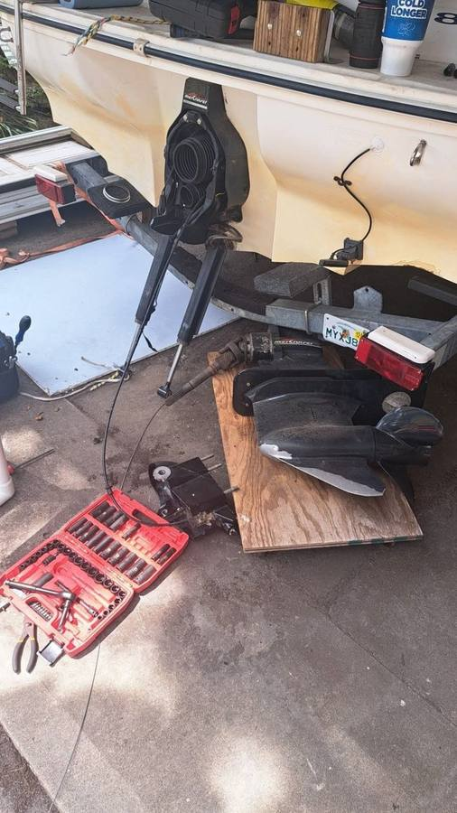
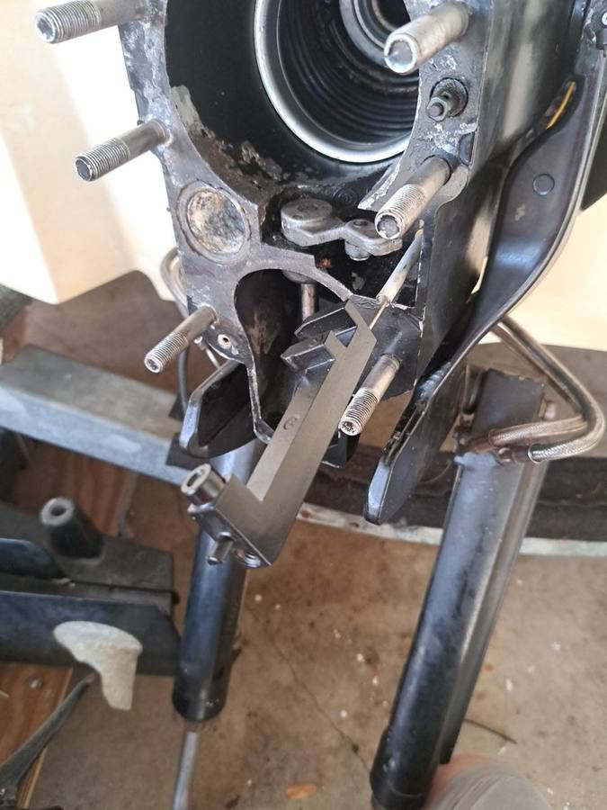

Marine repair services
Mobile boat mechanic
This is the core of it: I'm a mobile marine mechanic, which means the shop comes to you. Twenty years in the trade, working on boats where they sit instead of making you haul yours to a service bay and wait weeks. Diagnosis, repair, maintenance — all dockside.
What I can do on your boat depends on the engine, the model, and what the diagnosis shows — I'll tell you straight what's possible before any work starts.
Outboard motor repair
Outboard repair is my bread and butter — from hard-starting and bad idles to full troubleshooting. I service Mercury, Yamaha, Suzuki, Evinrude and Johnson (including the older OMC two-strokes a lot of shops won't touch anymore), and Tohatsu.
- Outboard motor repair — won't start, hard start, stalls under load, loss of power
- Fuel system diagnosis — carbs, injectors, pumps, filters, bad gas, ethanol issues
- Cooling system service — impellers, thermostats, water pressure, overheating
- Starting & charging system diagnosis — starters, alternators, batteries, wiring
- Trim and tilt — pumps, rams, relays, switches
- Lower unit & propeller service — gearcase reseal, water intrusion, prop replacement
- Controls & rigging — cables, shift/throttle linkage, remote controls
Sterndrive & inboard service
Sterndrive and inboard boats have their own set of problems — bellows, gimbal bearings, shift cables, manifolds — and I've been fixing them dockside for two decades.
- MerCruiser service — Alpha and Bravo drives, bellows, gimbal bearing, shift cable
- Volvo Penta service — drive service, bellows, cooling, and electrical
- PCM inboard service — maintenance and repair
- Drive removal, inspection, and reinstallation
- Manifold and riser replacement
- Engine alignment checks



Engine diagnostics
Guessing is the most expensive repair there is. I run professional marine diagnostic scan tooling to pull codes, read live data, and test components — so we fix what's actually broken instead of throwing parts at it. The $199 flat fee covers the trip to your boat and a full diagnostic evaluation within 30 miles.
Marine electrical diagnosis & repair
Dead batteries that shouldn't be dead, accessories that work sometimes, gauges that lie to you — marine electrical problems are miserable to chase without experience. I trace wiring, test charging and starting circuits, and repair it properly with marine-grade materials.
Preventive maintenance
Scheduled maintenance is what keeps a boat reliable instead of a dock ornament. I do full 100-hour and 300-hour services plus manufacturer scheduled maintenance — oil, filters, gear lube, impellers, plugs, anodes, fuel system, and a full once-over — wherever your boat lives. Flat-rate labor, parts at cost.
Jet ski / PWC repair
Jet skis and personal watercraft get the same treatment: diagnostics, engine repair, pump and driveline work, and electrical — at your dock or driveway.
Pricing
$199 flat covers the trip to your boat and a full diagnostic evaluation, within 30 miles.